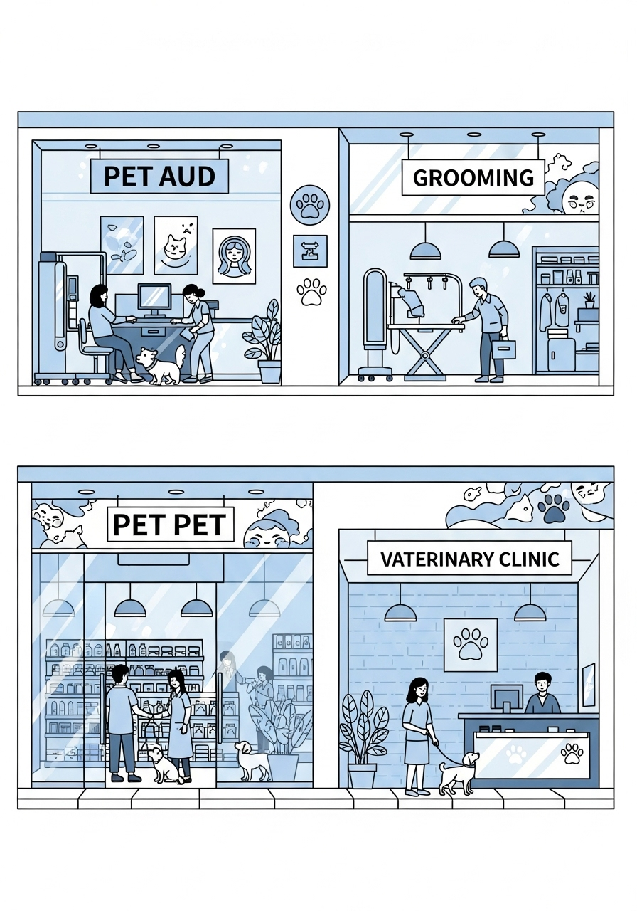

sistar company - sistar intl - global bases
global bases
"PT. SISTAR Indonesia & Global SISTAR Bases — Our on-the-ground operational fortresses executing container-scale imports, regulatory tunneling, local GMP repacking, and Area Manager coordination."
▫️ PT. SISTAR Indonesia (SCI) — 13+ Years of Trusted ASEAN Execution
Established as our primary Southeast Asian operational anchor, PT. SISTAR Indonesia transforms Korean and global innovations into dominant local market share:
- • Proven Local Distribution & Veterinary Network: Over 13 years of continuous commercial operations serving Indonesian veterinary hospitals, pet shops, poultry/livestock farms, and wholesale distributors.
- • NIE / BPOM / Kementan Regulatory Tunneling: Dedicated local regulatory affairs specialists fast-track product registrations for medicated shampoos, prescription pet diets, POCT diagnostics, and botanical supplements.
- • Dual-Stream ODM & Local GMP Sachet Repacking: Imports high-concentration bulk formulations from Korea and India for localized single-dose sachet packaging in Indonesia (quantized to Rp 1,320/unit), bypassing high finished-goods tariffs and maximizing partner margins.


▫️ Global SISTAR Bases Architecture & Area Manager Operations
Across all eight international nodes, SISTAR Bases bridge cloud-native Vibe Working with physical commercial infrastructure:
- • Multi-Purpose Regional Hubs: Each SISTAR Base operates simultaneously as an Area Manager command post, a B2B partner showroom, a Challenger training center, and a Space Sharing (SISTAR SS) micro-fulfillment depot.
- • Synchronized Global Expansion: Links Seoul HQ directly with Jakarta/Cibubur (Indonesia), Ho Chi Minh (Vietnam), Singapore, Shenzhen/Shanghai (China), Tokyo (Japan), US nodes, and Indian herbal sourcing bases.

▫️ Detailed Archive: SISTAR Ind
Comprehensive operational records, strategic frameworks, and source specifications preserved from SISTAR Ind:
- • Welcome to the Sistar Family: Healthier, Happier, Better Lifestyle
- • Discover our diverse family of brands designed to enhance your everyday experiences through innovation, quality, and care. From pet care to pharmaceuticals, we're committed to creating a healthier, happier world.
- • The Sistar Family Group: Innovation Across Industries
- • The Sistar Family Group represents our comprehensive ecosystem of complementary businesses designed to serve multiple market segments with the same commitment to excellence. Our integrated approach allows us to leverage expertise across industries while maintaining specialized focus in each sector.
- • From biopharmaceuticals to marketplace platforms, our family of companies works in harmony to deliver products and services that enhance quality of life, support business growth, and create sustainable value for our partners and customers throughout America and beyond.
- • Advanced pharmaceutical solutions focused on preventative healthcare and treatment innovations.
- • Streamlined e-commerce platform optimized for specialty products and seamless customer experience.
- • Dedicated pharmaceutical division specializing in both human and veterinary medical products.
- • BiOnDi: Brand-new Online Delights
- • BiOnDi represents our innovative approach to digital commerce and technology solutions. As our tech-focused division, BiOnDi delivers fresh online experiences through IT sourcing, app trading, and digital marketplace development.
- • Strategic technology procurement solutions that connect businesses with the right digital tools and resources to optimize operations and drive growth.
- • Specialized marketplace for mobile application acquisition, development, and monetization, creating value for developers and businesses alike.
- • Custom-built online environments that create exceptional user experiences and drive engagement through intuitive design and powerful functionality.
- • Visit biondicompany.com to explore how our digital solutions can transform your online presence and capabilities.
- • Petcentric: Pet Care Reimagined
- • At Petcentric, we've revolutionized the pet care experience through innovative mobile solutions that put comprehensive pet management at your fingertips. Our suite of applications helps pet owners, veterinarians, and pet businesses streamline everything from health tracking to service scheduling.
- • With our flagship Petcentric app for everyday pet owners and Petcentric Pro for veterinary professionals, we're creating an interconnected ecosystem that enhances the relationship between pets and their caregivers while simplifying the business of pet care.
- • Consumer-focused app for pet owners to manage health records, find services, and connect with the pet community.
- • Professional platform for veterinarians and pet care businesses to manage patients, appointments, and services.
- • Specialized application for livestock management, extending our technology to agricultural settings.
- • S-Quick: Rapid Delivery Solutions
- • S-Quick is our premium delivery service built for today's on-demand economy. Designed to integrate seamlessly with our other platforms and standalone businesses alike, S-Quick ensures that products move from warehouse to doorstep with unprecedented efficiency.
- • Critical items delivered within hours, not days, throughout major metropolitan areas across the country.
- • Advanced GPS integration provides minute-by-minute updates on your delivery's progress from dispatch to arrival.
- • Specialized vehicles and packaging for pharmaceuticals, pet supplies, and other temperature-sensitive products.
- • S-Quick completes our ecosystem by ensuring that the exceptional products across our brand family reach customers quickly and in perfect condition. This logistics backbone supports both our B2C and B2B operations with the reliability and speed that modern consumers expect.
- • Studio Butter: Smooth Content Creation
- • Studio Butter is our creative powerhouse, producing engaging digital content that tells compelling stories across platforms. From product showcases to educational content, our talented team creates video, photography, and interactive media that captivates audiences.
- • As the creative force behind sisTV and our mall.sisTV channels, Studio Butter helps brands connect with consumers through authentic storytelling and polished production. Our content strategy focuses on building community while driving conversion through engaging, shareable media.
- • Professional video content from commercials to tutorials, optimized for multiple platforms and viewing experiences.
- • Dynamic real-time content for product launches, demonstrations, and interactive customer engagement.
- • Platform-specific content strategies that build community and drive engagement across key channels.
- • Check out our content on YouTube: sisTV.id and mall.sisTV.id
- • Iruka: Premium Pet Care Specialists
- • Product of Iruka PetCare Group Korea
- • Iruka represents our premium line of specialized pet care products and services, bringing Korean pet care innovation to the American market. With a focus on gentle yet effective formulations, Iruka products are designed to nurture pets through every stage of life.
- • Our carefully formulated shampoos, conditioners, and grooming products provide "Bubble, Caring, Protecting" benefits that maintain coat health while addressing specific skin conditions and breed requirements.
- • Professional Development
- • Through our Grooming School & Groomer Certification programs, we're elevating professional standards in the pet care industry while creating career opportunities for passionate pet lovers.
- • Discover how Iruka can transform your pet care routine at iloveiruka.com
- • Our Marketplace & Business Platforms
- • The Sistar Family Group has developed a comprehensive ecosystem of digital marketplaces and business platforms that connect consumers with products and services across multiple specialized categories. Each platform is optimized for its unique audience while benefiting from shared technology and logistics infrastructure.
- • Comprehensive pet supplies marketplace offering premium products for all types of pets, from everyday essentials to specialty items.
- • sisMii.id & sisMall.id
- • Consumer-focused marketplaces featuring curated products across categories, with emphasis on quality and customer experience.
- • sisMarket.id & ebizmarket.com
- • B2B platforms connecting businesses with suppliers, manufacturers, and service providers through streamlined procurement solutions.
- • Our integrated approach to e-commerce creates seamless shopping experiences while offering businesses powerful tools to reach targeted customer segments across multiple platforms.
- • Sistar Pet World: Complete Pet Ecosystem
- • Sistar Pet World represents our holistic approach to pet care, combining retail, services, community, and healthcare into a comprehensive ecosystem for pet owners and professionals alike. We're creating spaces and experiences that celebrate the human-animal bond while providing everything needed for optimal pet health and happiness.
- • Curated selection of premium pet foods, supplies, and accessories available through sistarpetworld.id and physical locations.
- • Specialized pet transportation and travel services through pettravelindonesia.com , ensuring safe and comfortable journeys.
- • High-quality pet nutrition through brands like iskhan.id , formulated to meet specific dietary needs and preferences.
- • Community for breeders, veterinarians, and pet professionals through member/breeders club with exclusive benefits.
- • Sistar BioPharm: Advancing One Health
- • Sistar BioPharm represents our commitment to the One Health Initiative, recognizing that human health, animal health, and environmental health are interconnected. Through our pharmaceutical development programs, we're creating innovative solutions that address health challenges across species.
- • Our research focuses on preventative care, vaccines, and diagnostic technologies that help identify and address health concerns before they become serious. By localizing global innovations for the American market, we ensure that cutting-edge solutions are accessible and appropriate for local needs.
- • Research and production of preventative vaccines for both human and animal health, focused on emerging disease threats and underserved conditions.
- • Diagnostic Innovations
- • Advanced diagnostic tools that enable faster, more accurate identification of health concerns, allowing for earlier and more effective intervention.
- • Localization Expertise
- • Adaptation of global pharmaceutical advances to meet local regulatory requirements and address specific regional health challenges.
- • Livestock Business Solutions
- • Through our specialized livestock division, Sistar provides comprehensive solutions for agricultural operations ranging from small family farms to large commercial enterprises. Our approach integrates pharmaceutical products, nutritional expertise, and digital management tools to optimize animal health and productivity.
- • Sispharm.id offers a specialized portfolio of livestock medications, supplements, and preventative care products designed to meet the unique needs of different species and production environments. Our solutions support sustainable farming practices while ensuring optimal animal welfare and production efficiency.
- • Vaccination programs and health monitoring solutions that reduce disease incidence and minimize treatment requirements.
- • Specialized feed additives and supplements that optimize growth, reproduction, and overall animal health outcomes.
- • Effective medications and protocols for addressing common livestock health challenges with minimal production disruption.
- • Digital applications and record-keeping systems that streamline operations and improve decision-making for producers.
- • Explore our complete livestock solutions in our eCatalogue .
- • Professional Associations & ODM Partnerships
- • Sistar actively participates in and supports professional organizations that advance industry standards and best practices. Through our involvement with associations like ipsa.id and our own Iruka brand, we're helping to shape the future of pet care, animal health, and related industries.
- • Active membership and leadership in professional organizations that establish standards, provide education, and advocate for industry advancement.
- • Original Design Manufacturing
- • Strategic partnerships with manufacturers to develop exclusive products that meet our exacting standards for quality, safety, and performance.
- • Certification Programs
- • Development and administration of professional certification programs that elevate skill levels and establish recognized credentials.
- • Our collaborative approach enables us to leverage collective expertise while maintaining the innovative edge that distinguishes the Sistar family of brands in the marketplace. By partnering with industry leaders and supporting professional development, we help create a stronger ecosystem for all participants.
- • Nationwide Distribution Network
- • Strategic Locations Across America
- • The Sistar family of brands is supported by a robust distribution network strategically positioned to ensure efficient delivery nationwide. Our logistics infrastructure combines centralized inventory management with regional distribution centers, allowing us to maintain product availability while minimizing delivery times.
- • Major Distribution Centers
- • Strategic locations across the country ensure complete nationwide coverage with optimized shipping times.
- • Advanced inventory management systems enable rapid order fulfillment for both B2B and B2C customers.
- • Commitment to inventory availability ensures products are ready when customers need them.
- • Fast shipping options throughout the continental United States with expedited services available.
- • Our distribution capabilities provide competitive advantage across all our business lines, from pharmaceutical products requiring temperature control to everyday pet supplies delivered to retail partners and direct to consumers.
- • Sistar Fair: Connecting Our Community
- • The Sistar Fair represents our commitment to building community around our brands and the industries we serve. These signature events bring together consumers, professionals, and partners for product showcases, educational opportunities, and networking in a vibrant, engaging atmosphere.
- • Hands-on demonstrations and exclusive previews of new products across our brand family, with expert guidance and special event pricing.
- • Workshops, seminars, and certification opportunities led by industry experts, addressing current trends and advancing professional knowledge.
- • Structured networking opportunities that connect suppliers, retailers, service providers, and industry professionals for meaningful collaboration.
- • Check out our upcoming Sistar Fair events to experience the full spectrum of what the Sistar family of brands has to offer.
- • Let's Do Business Together
- • Whether you're a retailer looking to carry our products, a service provider interested in joining our platform, or a potential partner exploring collaboration opportunities, the Sistar Family Group offers multiple pathways to profitable business relationships.
- • Become an authorized retailer for our premium brands, with competitive margins, marketing support, and exclusive product access.
- • Join our digital marketplaces and apps as a vendor or service provider, reaching our established customer base with your offerings.
- • Distribution Opportunities
- • Explore regional distribution partnerships that leverage our product portfolio and your local market expertise.
- • Participate in our certification programs and educational initiatives to enhance your professional credentials and service offerings.